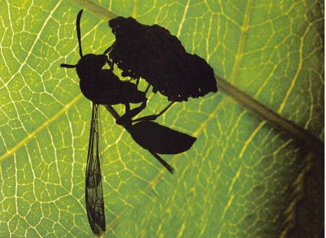
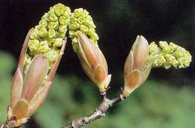
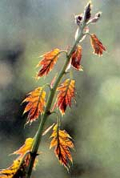
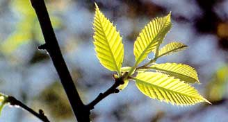
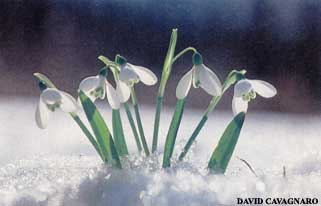
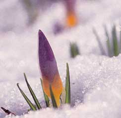

I am reminded uncomfortably of a mime's feigned, flat-handed struggle within an imaginary box. "I know how, you feel" I think and stare out the window: past the wasp, past the withered grass and leafless trees, at all the barren landscape beyond. Not even the chickadees chattering and hopscotching in the shrubs at our yard's edge can break my mood.
Those leafless trees are not leafless at all. On every living branch And twig of every shrub and tree, tucked within myriad buds blanketed by bud scales from frigid weather, are countless tiny, fully formed baby leaves.
The wasp loses its grip on the transparent barrier, falls to the sill and then resumes its futile upward climb. On a warmer day I'd rescue it. I'd lift the sash, put a wide-mouth mason jar over the insect, slip a piece of thin cardboard between the jar and the window and carry the trapped wasp outdoors to freedom. All summer I keep cardboard and a jar at hand for that purpose. When it comes to wasps, which tend to be hard-bodied and irritable, catch and release is safer than swatting.
But no, releasing this wasp out into the cold would doom it for sure, and I'm feeling too much cabin-fever kinship with her. I say "her" because, of course, this is a female. She's a paper wasp specifically a member of the genus Polistes, the sort that builds small, open-celled. umbrella-like nests beneath eaves and picnic-shelter roofs. Hornets and yellow jackets are paper wasps, too, but they build enclosed nests. They also are nastier-tempered than Polistes and create much larger colonies, sometimes numbering in the tens of thousands by early fall. Polistes colonies seldom exceed al couple hundred residents and more of ten consist of only a few dozen.
All wasps (and many other members of hymenoptera, which includes ants and bees) go through a similar annual life cycle. In summer the colony is made up entirely of females: nonproductive workers and a single egg-laying queen. At summer's end, after the colony population reaches its peak. a change takes place: Some of the nest's larval cells produce males, and some produce fertile females. Those chosen few leave the nest and mate. The mates, along with the wasps left behind, ultimately die. The females, now carrying sperm within their bodies but delaying ovulation, each find a sheltered place in which to sleep away the winter. They slumber beneath leaves or a log or loose bark, between boards in an attic or within a gap in a leaky old double-hung window.
I regard the stumbling wasp again: po tential royalty. If she survives this joke played on her by fleeting unseasonable warmth and a homeowner too lazy to seal a window, if she returns to her berth and emerges later into nature's true spring, she will make her own nest of chewed-wood pulp, lay an egg in each cell, add the sperm she holds and ascend to queenship. No wonder she tries so determinedly to cross the invisible glass barrier. There's work to be done - babies to be made. This is an expectant mother.
Expectant. Thinking this while peering out the window, I'm chagrined to realize I, too, have been fooled to frustration by the unseen, invisible, seemingly Not There. I look again at the landscape through eyes opened with the help of my wasp companion, and suddenly it is not so barren.
All around is spring itself, fresh and green and abuzz with life merely out of sight. Those "leafless" trees are not leafless at all. On every living branch and twig of every shrub and tree, tucked within myriad buds blanketed by bud scales from frigid weather, are countless tiny, fully formed baby leaves. They've been there since late last summer - all of them, spring's entire green gush of foliage, waiting in miniature: the dogwoods' saw-toothed ovals, the spiky red oaks and the many-thumbed whites, the arrow-shaped birches and elms, the feathery walnuts and ashes, every leaf of every deciduous species.
Spring's signature flowers, too, ornament the unseen landscape, disguised from above by the withered remains of last year's stems and leaves. Over at the moist edge of our woods, there's snowybloomed bloodroot; on the opposite side, white-winged Dutchman's breeches. Farther back, there's furtive jack-in-the-pulpit and mayapple, and along our driveway, wild columbine's whiskered pendants. They're all there, complete with stems, leaves and flowering parts: spring's generation snug underground in buds nourished by the food-storage bins we call bulbs, corms, rhizomes and tubers.
That night, hours later, I notice the wasp is gone. Good. At lest there's a chance she found way back to her bunk
The wasp clambers to eye level and reminds me again of its hymenopteran kin - and the host of other warm-weather insects covertly populating the winter world. In addition to countless queens-to-be and other insects wintering under shelter as adults, there are the eggs, larvae and pupae of hundreds of species, all with spring due dates. Moths such as the luna and polyphemus spend the winter months as pupae in leaf-wrapped cocoons; others forego the cocoon and burrow their mummy-like pupal selves underground. Not-quite-adult butterflies - future flying flowers - form a hard-shelled chrysalis around their nondescript bodies and hang out under, or on, frost-killed vegetation. Tiny beetle eggs spend the season buried in loose leaves and soil; in warmer weather, they'll emerge as glowworm larvae and then fireflies.
Then, too, are the hidden warm-blooded creatures: the mice and voles beneath the tall matted grass along the road; the hibernators, such as woodchucks and turtles, slumbering in burrows near the pond down the hill, their metabolisms on slow, pilot-light burn.
I'm standing at the window considering all this and noting how the chickadees outside seem more cheering than a while ago, when I remember I need to put more wood on the fire. I glance briefly at the wasp in the window, then leave to take care of that chore and others, too. That night, hours later, I notice the wasp is gone. Good. At least there's a chance she found a way back to her bunk.
I crawl into my own bed and pull up the covers. The weatherman is calling for a return to frigid temperatures, maybe freezing rain or snow. No problem, I think, just before dropping off to sleep. No problem at all.
|
 Big leaf maple buds explode into spring. |
A burgeoning northern red oak stretches to the sun. |
 Newly minted chestnut oak leaves in the Great Smoky Mountains National Park. |
|
 A beguiling chorus of snowdrops takes its place upon a snowy stage. |
 Defying cold and snow, the exuberant crocus insists spring is just around the corner. Hardly dormant, winter is full of new life waiting: You just have to look. |
 |
|
 |
|
|